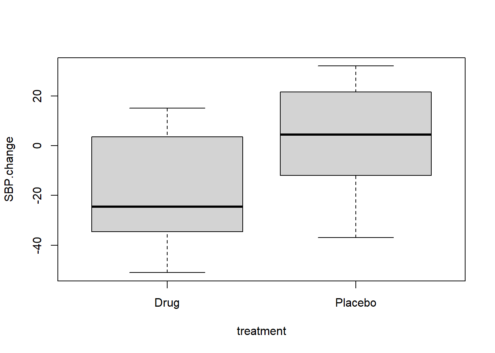
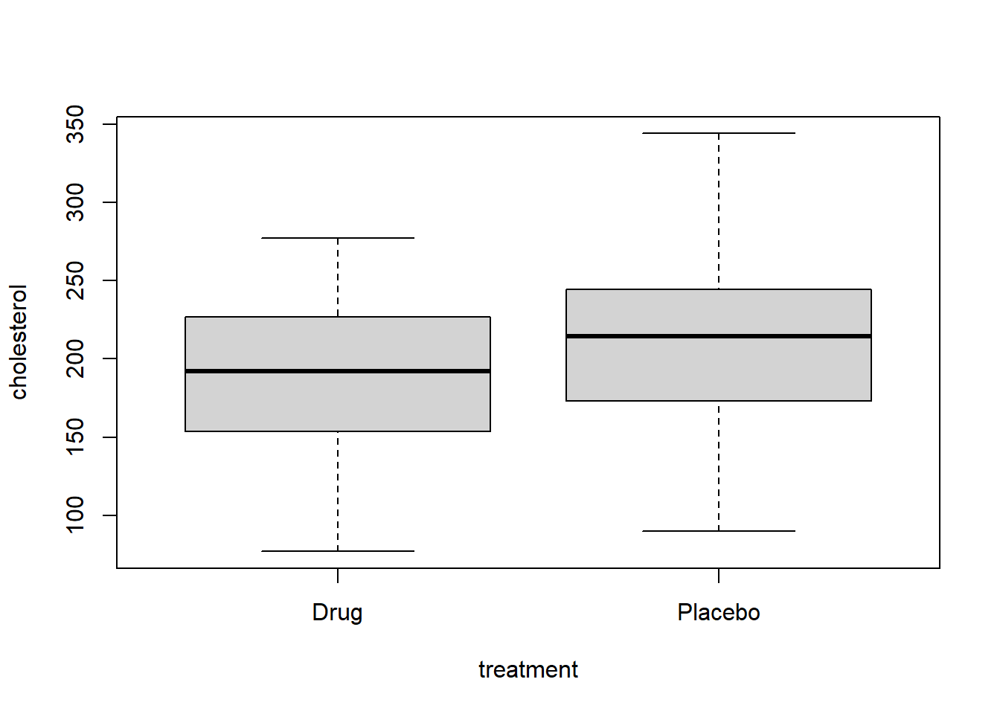

# SBP data
set.seed(11111)
drug = round(rnorm(n=20, mean= -10, sd=20), 0)
placebo= round(rnorm(n=20, mean= 10, sd=20), 0)
treatment = c(rep("Drug", length(drug)),
rep("Placebo", length(placebo)))
SBP.change = c(drug, placebo)
SBP.data = data.frame(treatment, SBP.change)
SBP.data = within(SBP.data, {
SBP.change.category = NA
SBP.change.category[SBP.change < 0] = "Improved"
SBP.change.category[SBP.change >= 0] = "Not Improved"
})
SBP.change.category.table = with(SBP.data,
table(SBP.change.category, treatment))9 Avoid turning quantitative variables into categorical variables
You may sometimes consider turning a quantitative response variable into a categorical response variable. Here are two examples where a collaborator may suggest creating a categorical response.
- A drug is intended to lower blood pressure. A collaborator suggests testing if there is a difference between drug and placebo in the proportion of subjects whose blood pressure decreases. This would change a quantitative measure (the actual measured change from baseline) into a categorical variable (Improved or not Improved).
- A drug is intended to reduce serum cholesterol. A collaborator suggests that the response variable should be defined as categorical: either normal cholesterol (< 200) or elevated cholesterol (>= 200). Let’s see how using categories affects power, sample size, and p-values.
In a few cases, as we’ll discuss, this can be helpful. But in most cases, turning a quantitative response variable into a categorical variable will reduce power, increase required sample size, and make your p-values worse.
We’ll simulate some experimental data to see the p-values first, and then do power and sample size calculations.
9.1 Example. Creating a categorical response with 2 values
For our first example, suppose that the treatment is drug or placebo, and the response variable is defined to be either:
- Systolic blood pressure change from baseline as a quantitative variable, or
- Systolic blood pressure change as a categorical variable, with 2 categories: Improved (lower than baseline) or Not Improved (not lower than baseline).
We’ll use simulated data on an experiment in which subjects received either drug or placebo, and their systolic blood pressure was measured 3 months later.
Here are the first 5 rows of SBP.data, which has the quantitative values.
head(SBP.data) treatment SBP.change SBP.change.category
1 Drug -10 Improved
2 Drug 6 Not Improved
3 Drug 8 Not Improved
4 Drug -34 Improved
5 Drug -35 Improved
6 Drug -6 ImprovedHere are boxplots of the data.
with(SBP.data, boxplot(SBP.change ~ treatment))
The graphs suggest there is a large difference between the drug and placebo.
Here is the t-test.
with(SBP.data, t.test(SBP.change ~ treatment))
Welch Two Sample t-test
data: SBP.change by treatment
t = -3.0365, df = 37.859, p-value = 0.004316
alternative hypothesis: true difference in means between group Drug and group Placebo is not equal to 0
95 percent confidence interval:
-33.418666 -6.681334
sample estimates:
mean in group Drug mean in group Placebo
-17.60 2.45 The t-test indicates that there is a significant difference between drug and placebo (p = 0.004).
Here is the table, where we have turned the quantitative SPD into categories.
SBP.change.category.table treatment
SBP.change.category Drug Placebo
Improved 14 8
Not Improved 6 12Now use a Fisher Exact test to compare the proportion Improved in each treatment arm. The Fisher test requires a table as input
fisher.test(SBP.change.category.table)
Fisher's Exact Test for Count Data
data: SBP.change.category.table
p-value = 0.111
alternative hypothesis: true odds ratio is not equal to 1
95 percent confidence interval:
0.7972704 15.9709807
sample estimates:
odds ratio
3.385212 The Fisher Exact test gives p = 0.11, indicating that there is no significant difference between drug and placebo in their effect on blood pressure. Contrast that to the t-test p = 0.004. It is evident that changing the quantitative variable into a categorical variable has changed a significant p-value into a non-significant p-value.
Let’s compare the sample size required for a t-test using the measured values to the sample size required for a test using the categories. I generated the data for this example using a normal distribution with a difference (delta) between drug and placebo of 20, and a within-group standard deviation of 20. Assume the desired power is 0.8 (80%) and the default alpha of 0.05. We can calculate the required sample size using the R function power.t.test() as shown.
power.t.test(delta = 20, sd=20, power=0.8)
Two-sample t test power calculation
n = 16.71477
delta = 20
sd = 20
sig.level = 0.05
power = 0.8
alternative = two.sided
NOTE: n is number in *each* groupRounding up, we get a required sample size of 17 per treatment group for the t-test.
To calculate sample size for the test using categories, we need the expected proportion of Improved or not Improved in each treatment group. We assumed an effect size of delta = 20 for the t-test. For the next calculation, we’ll assume the group means are -10 and 10, to give a difference between the means delta = 20 (which we used above for power.t.test).
The following code determines the proportion of the normal distribution for drug subjects that would be below 0, assuming a mean of -10 and standard deviation of 20.
# proportion of drug group below 0
pnorm(q=0, mean=-10, sd=20) # 0.69[1] 0.6914625Running this code, we find that 0.69 or 69% of drug subjects will have values below zero (that is, improved from baseline).
# proportion of placebo group below 0
pnorm(q=0, mean=10, sd=20) # 0.31 [1] 0.3085375Running this code, we find that 0.31 or 31% of placebo subjects will have values below zero (that is, improved from baseline).
We can calculate sample size and power for a test for a difference of proportions using the R function power.prop.test(). The two proportions, as calculated above, are p1=0.69, p2=0.31 for drug and placebo respectively. Again, the target power is 0.8.
power.prop.test(p1=0.69, p2=0.31, power = 0.8)
Two-sample comparison of proportions power calculation
n = 25.9665
p1 = 0.69
p2 = 0.31
sig.level = 0.05
power = 0.8
alternative = two.sided
NOTE: n is number in *each* groupRounding up, we get a required sample size of 26 per treatment group for the test for difference in proportions.
Which do you prefer, a required sample size of 26 per group using the categorical variable, or a required sample size of 17 per group using the quantitative variable?
9.2 If you must create a categorical variable, create more than two categories.
If for some reason you have to change a quantitative variable into a categorical variable, you can get more power, smaller sample size, and smaller p-values if you create more than two categories for the categorical variable.
For this example, suppose that the treatment is either drug or placebo.
The response variable is one of the following.
- serum cholesterol as a quantitative variable, or
- serum cholesterol as a categorical variable, with 2 categories: less than 200 versus 200 or higher, or
- serum cholesterol as a categorical variable, with 3 categories: less than 200, 200 to 240, and 240 or higher.
# Cholesterol data
drug.mean = 190
placebo.mean = 210
sd.cholesterol = 50
n.per.group = 100
set.seed(3)
drug = round(rnorm(n=n.per.group, mean=drug.mean, sd=sd.cholesterol), 0)
placebo = round(rnorm(n=n.per.group, mean=placebo.mean, sd=sd.cholesterol), 0)
treatment = c(rep("Drug", length(drug)),
rep("Placebo", length(placebo)))
cholesterol = c(drug, placebo)
cholesterol.data = data.frame(treatment, cholesterol)
cholesterol.data = within(cholesterol.data, {
chol.LT200 = NA
chol.LT200[cholesterol < 200] = "LT200"
chol.LT200[cholesterol >= 200] = "GTE200"
})
cholesterol.data = within(cholesterol.data, {
chol.category = NA
chol.category[cholesterol < 200] = "LT200"
chol.category[cholesterol >= 200 & cholesterol < 240]= "GTE200LT240"
chol.category[cholesterol >= 240] = "GTE240"
})
LT.200.table = with(cholesterol.data,
table(chol.LT200, treatment))
cholesterol.ordered.table = with(cholesterol.data,
table(treatment, chol.category))Here are the first 10 rows of the data set, cholesterol.data.
head(cholesterol.data, 10) treatment cholesterol chol.LT200 chol.category
1 Drug 142 LT200 LT200
2 Drug 175 LT200 LT200
3 Drug 203 GTE200 GTE200LT240
4 Drug 132 LT200 LT200
5 Drug 200 GTE200 GTE200LT240
6 Drug 192 LT200 LT200
7 Drug 194 LT200 LT200
8 Drug 246 GTE200 GTE240
9 Drug 129 LT200 LT200
10 Drug 253 GTE200 GTE240The column “chol.LT200” shows serum cholesterol as a categorical variable with 2 categories: less than 200 versus 200 or higher. The column “chol.category” shows serum cholesterol as a categorical variable with 3 categories: less than 200, 200 to 240, and 240 or higher.
Create a boxplot of measured cholesterol versus treatment.
with(cholesterol.data, boxplot(cholesterol ~ treatment))
Here is the t-test for cholesterol versus treatment. The p-value of 0.0038 indicates that mean cholesterol differs between drug and placebo.
with(cholesterol.data, t.test(cholesterol ~ treatment))
Welch Two Sample t-test
data: cholesterol by treatment
t = -2.9272, df = 186.85, p-value = 0.003845
alternative hypothesis: true difference in means between group Drug and group Placebo is not equal to 0
95 percent confidence interval:
-34.131508 -6.648492
sample estimates:
mean in group Drug mean in group Placebo
190.55 210.94 In the cholesterol.data the column “chol.LT200” is a categorical variable with 2 categories: less than 200 versus 200 or higher. We can use a Fisher Exact test to test if there is a difference between drug and placebo using chol.LT200 as the response variable.
In the table we see that serum cholesterol is less than 200 in 54 of the drug subjects and in 44 of the placebo subjects. The drug appears to be effective.
LT.200.table treatment
chol.LT200 Drug Placebo
GTE200 46 56
LT200 54 44Here is the Fisher Exact test using this table.
fisher.test(LT.200.table)
Fisher's Exact Test for Count Data
data: LT.200.table
p-value = 0.2029
alternative hypothesis: true odds ratio is not equal to 1
95 percent confidence interval:
0.368984 1.213068
sample estimates:
odds ratio
0.6706832 The Fisher Exact test gives p = 0.2, indicating that there is no difference between drug and placebo in the proportion of subjects with serum cholesterol less than 200. Contrast this result to the t-test, which gave p = 0.0038, indicating a significant difference between drug and placebo.
We can get a better p-value if we define serum cholesterol as a categorical variable with 3 categories: less than 200, 200 to 240, and 240 or higher, and then use a CMH test that recognizes the ordering. In the cholesterol.data, the variable chol.category has the 3 categories.
cholesterol.ordered.table chol.category
treatment GTE200LT240 GTE240 LT200
Drug 31 15 54
Placebo 24 32 44Because we have an ordered categorical variable, we will use the Cochran-Mantel-Haenszel (CMH) test, implemented in the CMHtest() function from the vcdExtra library. For more details on this function see the chapter on the CMH test for ordered variables.
To run the CMHtest in R, install the vcdExtra package and load the library.
# install.packages("vcdExtra")
library(vcdExtra)The CMHtest requires a table as input. We pass this table to the CMHtest() function.
CMHtest(cholesterol.ordered.table)Cochran-Mantel-Haenszel Statistics for treatment by chol.category
AltHypothesis Chisq Df Prob
cor Nonzero correlation 0.062293 1 0.802907
rmeans Row mean scores differ 0.062293 1 0.802907
cmeans Col mean scores differ 8.019952 2 0.018134
general General association 8.019952 2 0.018134For this analysis, the relevant results are in the row labeled “rmeans” in the output.
- The row labeled “rmeans” (highlighted in yellow) shows the result for testing that the row mean scores differ for drug versus placebo. The CMH test gives p = 0.019, indicating that drug and placebo differ significantly in serum cholesterol.
- The row labeled “cor” is used for tables where both rows and columns are ordered.
- The row labeled “cmeans” would apply to tables in which the rows are ordered but columns are not ordered.
- The row labeled “general” is similar to the chi-squared and Fisher tests.
Let’s compare the results from the three different ways of analyzing this data set.
The Fisher Exact p-value using 2 categories is not significant (p = 0.2). In contrast, the p-value for 3 categories using the CMH test for ordered categories is significant (p = 0.0191), and much closer to the p-value using the t-test with quantitative values (p = 0.0038).
When you create the categories, it is desirable that there be a plausible reason for selection of the thresholds that define the categories, and that there be a good number of observations in each level of the categorical variable.
9.3 Logistic regression and ordinal logistic regression for categorical response variables.
An alternative to the CMH test for categorical variables is logistic regression. If the response variable has only 2 categories, then you can use the standard version of logistic regression. If the response variable has 3 or more ordered categories, you can use ordinal logistic regression.
Ordinal logistic regression is available in the R package polr. The UCLA statistics website on ordinal logistic regression has a good introductory tutorial on polr (https://stats.oarc.ucla.edu/r/dae/ordinal-logistic-regression/). The UCLA statistics tutorial website stats.oarc.ucla.edu/other/dae is a great resource that I highly recommend. There are many very helpful and easy to understand tutorials on analyses using R and other statistical software.
9.4 When can it be helpful to use categories instead of quantitative measures?
I’ve occasionally encountered situations in which it was helpful to turn a quantitative variable into a categorical variable. Here are some examples.
Extremely inaccurate quantitative measurements
If the supposed “quantitative” measurements of a variable are extremely inaccurate the quantitative information may be less informative than categories. In a data set that I examined many years ago, the supposed “quantitative” measure was the expression level of a gene, based on fragments of mRNA recovered from (some quite old) paraffin-embedded tumor blocks. If you have tried this yourself, you likely know that the mRNA is highly fragmented, and the resulting gene fragments can be difficult to assemble into a complete sequence. At the time I was doing this, the human genome project had not been completed, so we had no reference sequence for many genes. I examined correlations among genes known to be in the same regulatory pathways, or known to have related biological function, but found none of the results made any sense. Eventually I replaced the “quantitative” measure with a categorical indicator that a particular gene was either found expressed or not found in a particular tissue specimen. Instead of correlation, I used a Fisher Exact test to examine the co-occurrence of genes. The analyses using the categorical indicator variable and Fisher Exact test were able to reproduce known associations and contributed to finding likely functions of many genes. So, in this case, turning a quantitative variable into a categorical variable proved useful.
Biologically meaningful categories
In some cases, an easily obtained measured variable such as age may be a proxy for a biologically meaningful category, such as pre-menopausal versus post-menopausal status. For a model of cancer versus gene expression, we might consider adding age as a covariate, as a proxy for menopausal status. If the true menopausal status is the biologically meaningful covariate, but it is not known, then an analysis may yield better results if we create a categorical variable such as, for example, age less than 50 versus age 50 or greater as a proxy. We might alternatively consider 3 ordered categories for age, such as <50, 50 to 60, and over 60, corresponding to pre-, peri-, and post-menopausal.
Non-linear response
In some cases, the relationship between two quantitative variables may not be a straight line. Testing using correlation or regression may not work well. In this case, it can be useful to split one or both variables into meaningful categories and use either ANOVA or CMH to test for association.